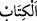
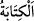

bedel hazır ise köle bu bedeli hemen öder. Değilse efendisinin kendisine tanıdığı bir
süre içinde temin ettikten sonra ödemek şartıyla hürriyetine kavuşur.
Mükâtebe, müfâale bâbından olup akid yapılırken köle ve efendinin karşılıklı bir
yazışmada bulunduklarını ifâde eder. Efendi, üzerinde anlaştıkları bedeli ödediği
takdirde köleyi âzâd edeceğine, köle de bu bedeli eksiksiz ve zamanında ödeyeceğine
söz verir. Eğer bedel taksidle ödenecekse bunun ne zaman hangi miktarda olacağına dâir
bir yazışmaya da ihtiyaç vardır.
el-Müfredât’ta der ki: “Kölenin kitâbeti, kazancından belli bir miktar efendisine
ödemek sûretiyle kendini ondan satın almasıdır. Âyetteki “ kelimesinin îcâb/farz
ve zorunlu kılma mânâsına gelen “den ve yazı yazmak demek olan “den
türetilmiş olması mümkündür.
Rivâyete göre Huveytıb b. Abdüluzzâ’nın kölesi Sabîh efendisinden, belli bir bedel
karşılığında kendisini âzâd etmesini istedi, o da buna yanaşmadı. Bunun üzerine bu âyet
nâzil oldu. Nitekim et-Tekmile’de böyle geçmektedir.
“Allah’ın size vermiş olduğu malından siz de onlara verin.” Bu emir de mendûbiyet
içindir. Efendilere, mükâtebe yaptıkları köle veya câriyelerinden aldıkları bedelin bir
kısmını tekrar onlara iâde etmelerini tavsiye etmektedir. Rasûlullah (s.a.) şöyle
buyurmuştur: “Bir kişinin: ‘Ben hakkımı tamamen alırım, ondan hiçbir şey bırakmam.’
demesi onun cimri biri olduğunu göstermeye yeter.”[163]
Asmaî’nin naklettiğine göre bedevînin biri bir kavme gelerek onlara: “Bu, hakka dâir
bir şey midir, yoksa ondan daha hayırlı bir şeye mi dâirdir?” diye sordu. Ona: “Haktan
daha hayırlı ne olabilir ki?” dediler. O da: “Lütufta bulunmak ve bilmezden gelmek
hakkı tamamıyla almaktan daha hayırlıdır.” diye cevap verdi. Nitekim Sehâvî’nin el-
Mekâsıdü’l-hasene’de böyle geçmektedir.[164]
Kâşifî, der ki: “Huveytıb, kölesi Sabîh’i yüz dînâra mükâteb yapmıştı. Bu âyeti
işitince ona yirmi dînâr bağışladı.” Yâni ona anlaştıkları miktardan yirmi dînârını ona
hibe etti. Sabîh da kalan parayı ödedi. O, Huneyn savaşında şehid edilmiştir.
Âyette malın Allah’a izâfe edilip kullara malı verenin Allah olduğunun belirtilmesi,
emredilen şeyi iyice araştırıp inceleyerek emri yerine getirmeye teşvik içindir. Çünkü
hakîkî mâlik Allah olmakla birlikte kulların sâhip bulundukları malın O’nun tarafından
geldiğini düşünmek, malı O’nun istediği şekilde sarf etmeyi gerektiren en kuvvetli
sebeplerden biridir,
Bazıları bu emrin bütün müslümanları, hürriyetini kazanmak isteyen kölelere malî
yardımda bulunmaya çağırdığını söylemişlerdir. Yâni “Onlara verin” hitâbı, bütün
müslümanlaradır. Bu mükâteblere yardım etsinler. Hürriyetlerini kazanmaları için
vermeye anlaştıkları malı ödeyebilmeleri ve kölelik bağından kurtulabilmeleri için
onlara zekâtlarını versinler. Bu sebeple yapılan iyiliğe “fekkü rakabe” denir; cezâ
yokuşunu/engelini ancak onunla aşabilirler.